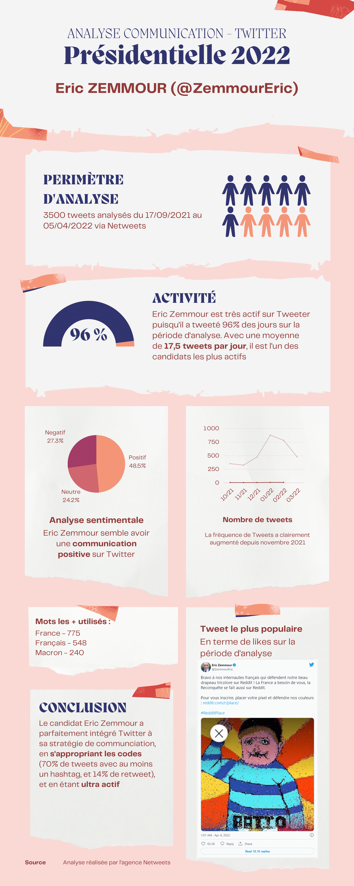
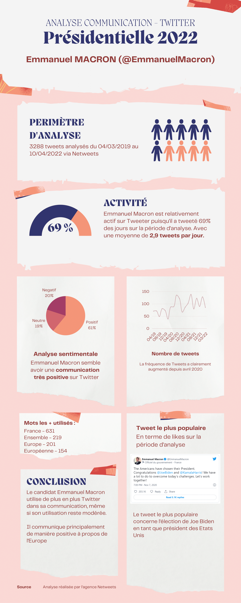
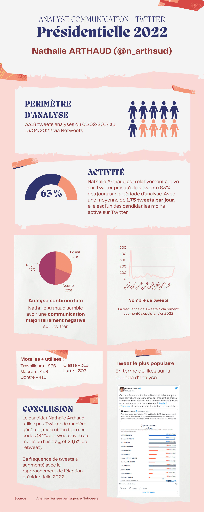

{% extends 'game/base_dashboard.html' %}
{% load static %}

{% block content %}


                <!-- Begin Page Content -->
                <!-- TEST -->

                <div class="container-fluid">

                    <!-- Page Heading -->
                    <h1 class="h3 mb-2 text-gray-800">Analyse sémantique de la présidentielle 2022</h1>
                    <p class="mb-4">En cliquant sur une des analyses, le fichier PDF sera ouvert dans un nouvel onglet</p>


                    


                        <!-- Carte analyse du canditat -->
                        <div class="card shadow mb-4">
                        <!-- Card Header - Accordion -->
                        <a href="#collapseCardExample" class="d-block card-header py-3 collapsed" data-toggle="collapse"
                            role="button" aria-expanded="false" aria-controls="collapseCardExample">
                            <h6 class="m-0 font-weight-bold text-primary">Analyse du candidat Eric Zemmour (@ZemmourEric)</h6>
                        </a>
                        <!-- Card Content - Collapse -->
                        <div class="collapse" id="collapseCardExample">
                            <div class="card-body">
                                                                                                    <a target="_blank" href="../../static/game/analyses/Analyse-Netweets-Zemmour.pdf"><div class="text-center">
                                        

                                    </div></a>

                            </div>
                        </div>
                    </div>
                    <!-- END Carte analyse du canditat -->


                    <!-- Carte analyse du canditat -->
                        <div class="card shadow mb-4">
                        <!-- Card Header - Accordion -->
                        <a href="#collapseCardExample2" class="d-block card-header py-3 collapsed" data-toggle="collapse"
                            role="button" aria-expanded="false" aria-controls="collapseCardExample2">
                            <h6 class="m-0 font-weight-bold text-primary">Analyse du candidat Emmanuel Macron (@EmmanuelMacron)</h6>
                        </a>
                        <!-- Card Content - Collapse -->
                        <div class="collapse" id="collapseCardExample2">
                            <div class="card-body">
                                                                                                    <a target="_blank" href="../../static/game/analyses/Analyse-Netweets-Macron.pdf"><div class="text-center">
                                        

                                    </div></a>

                            </div>
                        </div>
                    </div>
                    <!-- END Carte analyse du canditat -->


                                        <!-- Carte analyse du canditat -->
                        <div class="card shadow mb-4">
                        <!-- Card Header - Accordion -->
                        <a href="#collapseCardExample3" class="d-block card-header py-3 collapsed" data-toggle="collapse"
                            role="button" aria-expanded="false" aria-controls="collapseCardExample2">
                            <h6 class="m-0 font-weight-bold text-primary">Analyse du candidat Nathalie Arthaud (@n_arthaud)</h6>
                        </a>
                        <!-- Card Content - Collapse -->
                        <div class="collapse" id="collapseCardExample3">
                            <div class="card-body">
                                                                                                    <a target="_blank" href="../../static/game/analyses/Analyse-Netweets-Arthaud.pdf"><div class="text-center">
                                        

                                    </div></a>

                            </div>
                        </div>
                    </div>
                    <!-- END Carte analyse du canditat -->


                    
                        


						
						


                <!-- /.container-fluid -->

            </div>
            <!-- End of Main Content -->


</body>


{% endblock %}